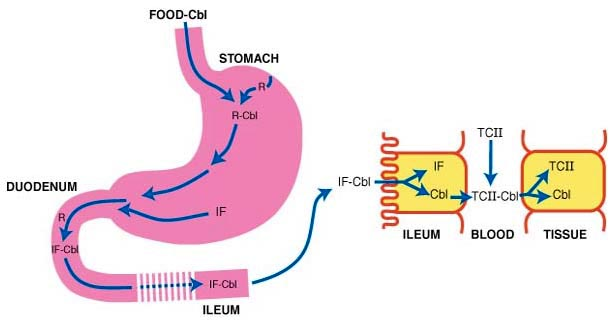

Kobalamin, vitamin B12
Tilbake til artikkelserien om næringsstoffene
Det siste av de åtte B-vitaminene er kobalamin, mest kjent som vitamin B12. B-vitaminene er vannløselige, så vi er avhengig av et kontinuerlig inntak av disse for å opprettholde god helse. Disse vitaminene er i stor grad involvert i kroppens energimetabolisme, som kofaktorer til viktige enzymer.
Navnet kobalamin kommer fra at vitaminet inneholder et kobolt-atom, som er sentralt i en struktur kalt corrin-ringen, og ulike forbindelser kan binde til denne. B12 finnes i kroppen i to hovedformer: metylkobalamin og adenosylkobalamin.
B12 er på mange måter et spesielt vitamin. For det første finnes vitaminet bare i animalske matvarer, i motsetning til de andre B-vitaminene som finnes i alle typer mat. Dette er et problem for vegetarianere/veganere. Opptaksmekanismen skiller seg også vesentlig fra de andre vitaminene, noe som blant annet er et stort problem for folk som har gjennomgått fedmekirurgi.
Opptak
Opptaket av B12 er som sagt spesielt, sammenlignet med de andre B-vitaminene, og består av flere steg.
I maten er B12 forbundet med proteiner, så proteinfordøyelsen er viktig i B12-opptaket. Pepsin produsert i magesekkens hovedceller, frigjør vitaminet. Parietalcellene i magesekken produserer et glykoprotein, intrinsic factor, IF. Dette glykoproteinet binder spesifikt til B12, og er helt sentralt i opptaket av vitaminet.
I magesekken er B12 bundet til et glykoprotein som heter haptocorrin som dannes i spyttet, men helt øverst i tarmen brytes dette proteinet ned, og B12 binder i stedet til IF, som frakter det nedover i tynntarmen. Helt nederst i tynntarmen (ileum) finner vi en IF-reseptor som heter cubam. Denne sørger for at IF-B12-komplekset tas opp i tarmcellene.
Det aktive opptaket gjennom cubam er effektivt, men har en begrenset kapasitet. I tillegg til dette kan B12 absorberes ved passiv diffusjon, men dette begrenser seg til omtrent 1% av den intatte dosen. Ved svært høye doser kan den passive ruten være viktig, men normalt sett bidrar denne lite.

Inne i tarmcellene binder kobalaminet til ulike molekyler. Disse forbindelsene kan binde til to ulike transportproteiner, transkobalamin (TC) og haptocorrin (HC). Den delen som er bundet til HC kan lagres i leveren, men kan ikke leveres til målcellene. For å kunne brukes i målcellen må kobalaminet værebundet til TC.
Når TC-kobalamin tas opp i målcellene via en TC-reseptor, så er det første som skjer at fritt kobalamin må frigjøres. I blodet sirkulerer nemlig kobalamin bundet til en metyl-, adenosyl-, cyano- eller hydroksygruppe, så denne må spaltes av. Deretter kan kobalaminet enten få koblet på en metylgruppe eller en adenosylgruppe. De to kofaktorene, metylkobalamin og adenosylkobalamin, utfører vitaminets funksjoner.
Funksjoner
B12 har to kjente funksjoner.
Metylkobalamin er kofaktor for enzymet metionin syntase, som er sentral i remetyleringen av homocystein, og dermed reduserer nivåene av homocystein i blodet. Denne prosessen er også avhengig av vitaminene B6 og folat.

Adenosylkobalamin er kofaktor for enzymet malonyl-koenzym A mutase, som er viktig i metabolismen av de forgreinede aminosyrene (BCAA), fettsyrer med oddetall karbonmolekyler og kolesterol. Disse næringsstoffene brytes ned til metylmalonyl-koenzym A, som metaboliseres gjennom denne mutasen.
Dersom vi mangler B12 så vil ikke disse to funksjonene gå som normalt. Dette vil medføre en opphopning av homocystein (Funksjon 1) og metylmalonsyre (MMA), som produseres dersom mutasen ikke fungerer. Høye nivåer av disse to metabolittene fungerer derfor som funksjonelle markører for B12-status, hvorav MMA er regnet som den beste.
Behov og anbefalinger
Behovet for B12 avhenger av alder, og evnen til å ta opp vitaminet i tarmen.
De norske anbefalingene er i området 2µg/dag, og litt høyere for ammende. Dette tilsvarer mengden i ca 100g egg eller 100-200g kjøtt/fisk.
I mat finner vi B12 hovedsakelig som Hydroksy- eller Cyano-B12, og de aktive formene Metyl- og Adenosyl-B12 bare finnes i små mengder som raskt brytes ned. I kosttilskudd finner vi vanligvis Cyano-B12. I motsetning til det man intuitivt skulle tro, er det lite som tyder på at det er noen fordeler med å få i seg de aktive formene direkte. Dette er fordi den funksjonelle gruppen uansett må spaltes av før B12 kan utøve sine funksjoner.
Mangeltilstander
Vi skiller daglig ut ca 0,1% av B12-lagrene, som er på ca 2-5 mg, og tømming av lagrene tar derfor flere år. B12-mangel skyldes svært sjelden for lavt inntak av vitaminet. Årsaker til mangel kan være langvarig utelukkelse av animalske matvarer (vegetarianere/veganere), malabsorbsjonstilstander eller genetiske feil som rammer et av trinnene i den komplekse metabolismen. Fedmekirurgi, der deler av magesekken/tynntarmen kobles ut, reduserer produksjonen av IF, og dermed reduseres opptaket av B12. Alle som er fedmeoperert må få B12 tilført.
En annen ting som er verdt å ha i bakhodet er at ca 70% av det sirkulerende kobalaminet er bundet til HC, og er dermed utilgjengelig for cellene. Av denne grunn kan de målte nivåene være bortimot normale, og til og med høye, selv om man har en funksjonell mangel. Derfor anbefales det at man også vurderer minst en av de funksjonelle markørene, og ikke konkluderer basert på sirkulerende B12 alene.
Mangel av B12 gir utslag i redusert aktivitet av de to B12-avhengige enzymene nevnt over. Mangel på aktivitet av metylmalonyl-CoA mutase fører til en opphopning av sure metabolitter, og den påfølgende acidosen kan gi encefalopati som mange dør av. De overlevende kan oppleve konsekvenser som vekstmangel, kronisk nyresykdom, nevrologiske problemer og osteopeni. Mangel på aktivitet i metionin syntase gir en opphopning av homocystein og reduserte nivåer av metionin. Dette gir konsekvenser som utviklingsproblemer, mental retardasjon, tidlig hjertesykdom og megaloblastisk anemi (redusert oksygentransport i blod).
Pernisiøs anemi er en autoimmun sykdom som rammer parietalcellene i magesekken. Dette gjør at vi ikke får produsert IF, og uten IF får vi ikke absorbert B12. Dette kan i prinsippet behandles ved å tilføre IF utenfra, men normalt sett behandles det med B12-injeksjoner, som ikke er avhengig av opptaket i tarmen. En annen sykdom som påvirker B12-opptaket er Immerslund-Gräsbeck syndrom, som medfører en dysfunksjonell cubam-reseptor.
B12-mangel kan også behandles med kosttilskudd, men dette forutsetter at dosene er svært høye slik at vi får utnyttet det passive opptaket. Også pasienter med pernisiøs anemi eller Immerslund-Gräsbeck syndrom kan behandles på denne måten, noe som gir et alternativ til B12-injeksjoner. I 2017 ble det åpnet opp for å gi tilskudd av B12 i doser på 1mg, altså 500 ganger høyere enn de Norske anbefalingene.
Klinisk B12-mangel defineres ved tilstedeværelse av megaloblastisk anemi, en tilstand hvor blodcellene blir store og dysfunksjonelle, og/eller nevrologiske komplikasjoner som skyldes at myelinlaget rundt nervecellene brytes ned. Dette er relativt uvanlig i vår del av verden, men i nyere tid har fokuset i større grad blitt flyttet over på subklinisk mangel, eller marginal vitamin B12-status, som er definert som milde, biokjemiske forstyrrelser, men uten de klassiske kliniske symptomene. Dette kan opptre helt symptomfritt, eller med diffuse symptomer som generell trøtthet og forvirring, som kan forveksles med andre ting enn B12-mangel. Subklinisk B12-mangel er langt mer utbredt enn klinisk mangel, men grunnet mye usikkerhet i de tilgjengelige biokjemiske markørene er det dårlig definert, og årsakene er også ukjent. Det foreligger foreløpig heller ikke klare retningslinjer for hvorvidt, eller hvordan, dette eventuelt skal behandles, men det er noen studier som har vist gunstige effekter av å gi kosttilskudd.
Kan vi få for mye?
Det er ingen kjente toksiske effekter av B12, verken fra mat eller fra tilskudd.
Gode kilder
B12 finnes hovedsakelig i animalsk mat. Spesielt høy konsentrasjon finner vi i lever og sjømat, men også melk, kjøtt og egg er gode kilder. Forskning fra Danmark har vist at biotilgjengeligheten fra melk og meieriprodukter er høyere enn fra de andre matvarene, sannsynligvis fordi melk inneholder transkobalamin, og at B12 kan binde tett til melkeproteinet.
Aktuelt om B12
- I NNR 2023 ble anbefalingen for kobalamin økt til 4µg/dag for voksne
Artikkelen er oppdatert juli 2017